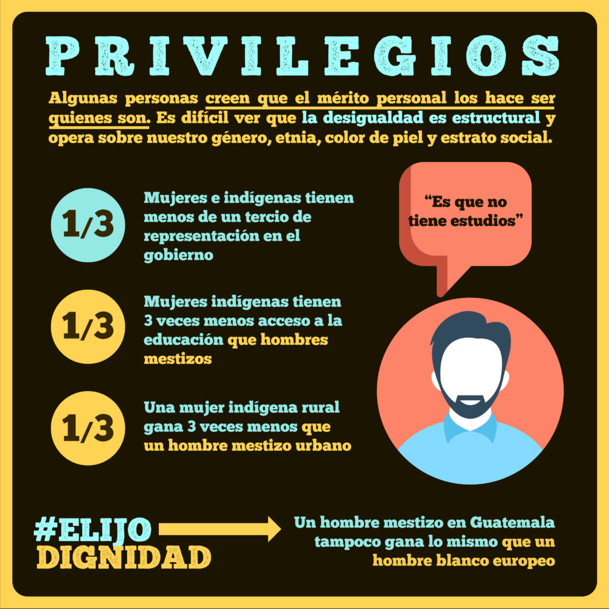
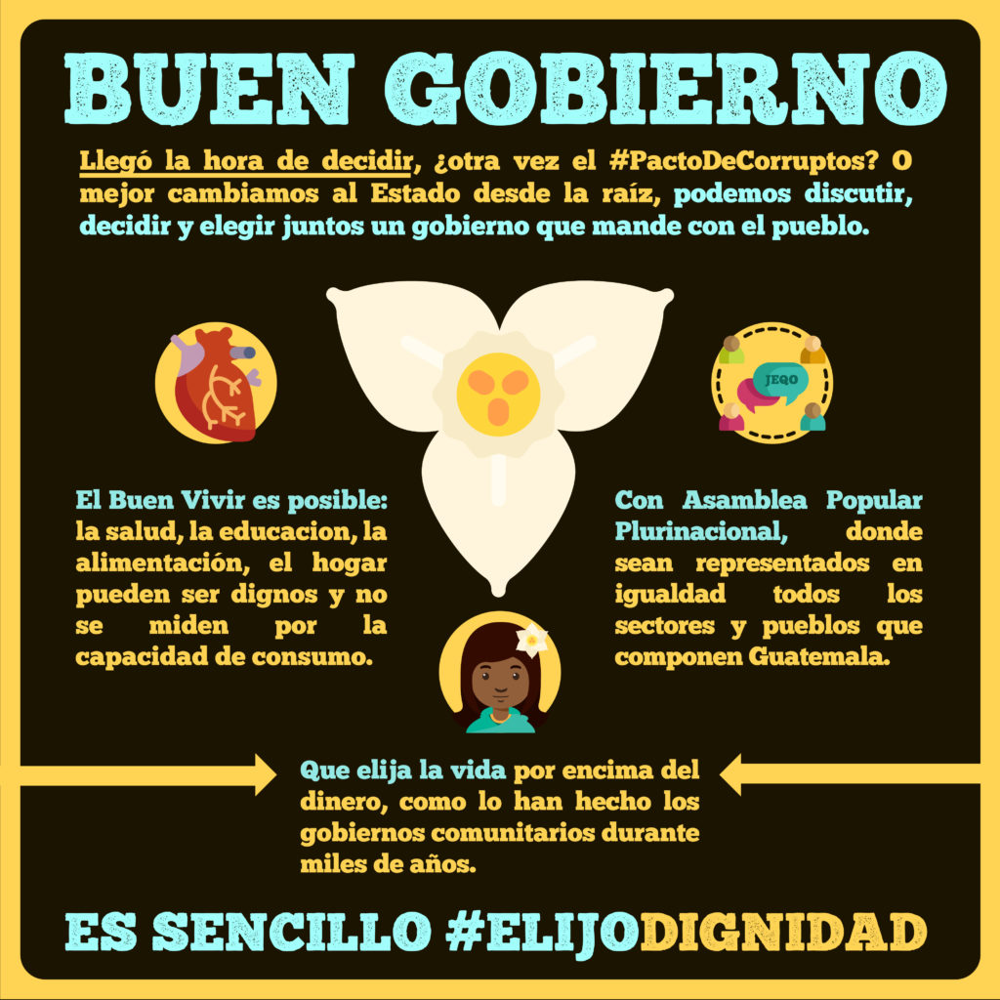

La sección anterior ha sido un poco densa ¿verdad? ¡A no desalentarse! No pretendemos transformarnos en especialistas de comunicación política y tener clarísimos los conceptos teóricos, nos interesa poder manejar las ideas más importantes para ubicarnos en los nuevos escenarios que se nos plantean. Nos interesa simplificar y comprender para organizarnos mejor.
Ahora bien, teniendo un poco más claro el escenario donde nos movemos... ¿cómo nos organizamos como grupo a la hora de plantear la comunicación de la campaña? El caso de Guatemala nos da algunas ideas interesantes:
1. Afianzar una comunidad creativa
"En Guate hicimos un taller con 25 personas. Éstas 25 personas representaban diversidad de colectivas estudiantiles, organizadas, de organizaciones de mujeres, de organizaciones y colectivos de jóvenes que están haciendo activismo, diversas expresiones en serio, pero que todos teníamos claridad que durante las elecciones queríamos hacer algo porque era demasiado la infamia pero no sabíamos qué ¿no? Y entonces ahí fue ahí que poco a poco fue que fuimos construyendo este grupo que creció y justamente luego con el inicio de la intervención de #ElijoDignidad pues contarles por ejemplo, haciendo contenidos, por ejemplo haciendo memes, pues la gente empezó a mandar se los juro, no nos alcanzaban las manos. Éramos tres o cuatro personas subiendo a twitter, facebook, instagram y compartiendo en otros grupos, pero la cantidad de memes que recibimos de la gente... eran una fuente inagotable. Era muy hermoso y muy chistoso además, porque no acabamos nunca de subir todos los memes que recibimos. Fue bien loco. Hubiéramos podido, no sé, subir un meme por hora al día, era una cosa que te desbordaba. Y la gente lo empezó a hacer a cuenta propia, osea, pusimos a disposición en un canal de telegram las cuentas propias de facebook, de twitter, de instagram a la que la gente mandaba inbox. Entonces la generación de contenido, digamos estos artes así tan hermosos ya pues teníamos dos personas que sabían de diseño que le querían entrar, y luego hubo gente que de manera voluntaria de repente mandó un póster, o mandaba cosas, o hacía un video. Pero en general el equipo no era tanta gente. Haciendo video habíamos cuatro, haciendo redes habían otras cuatro, y luego alimentación de community manager… te podría hablar de un máximo de doce personas. Y luego una red de solidaridad y de generación de contenidos que se generó ahí a partir de que la gente le gustó la intervención y se quería sumar, en donde somos un grupo como… en el momento tope de la campaña llegamos a ser alrededor de 200 personas, pero ahora que ya ha cambiado un poco la dinámica y seguimos así como activos alrededor pues de otros temas somos como 75 que ya se quedaron adentro del canal y de #ElijoDignidad y que estamos ahí compartiendo cosas y la gente manda sus memes de vez en cuando, sus reflexiones, sus textos etcétera. Fue muy interesante ver cómo creció, se encogió y cómo se ha sostenido en grupo en un año ya."
2. Procurar conectividad narrativa
Hay una idea interesante que nos comparte la experiencia de Guatemala:
"Elijo Dignidad siempre fue un grupo pequeño, siempre fuimos un grupo de organizaciones pequeñas pero tenemos conectividad narrativa, que eso es lo más importante. No se necesita que tengas a mil personas, se necesita saber conectar narrativamente."
¿Qué quiere decir esto? Que las piezas comunicacionales elaboradas deben abordar la narrativa en conjunto. En este caso, la narrativa de la dignidad de los pueblos frente al racismo, el capitalismo y el mal gobierno. Las producciones pueden hablar de distintos temas, pero deben estar conectados a una misma narración, deben participar de la conversación sin perder de vista el objetivo narrativo y comunicacional.
"Dignidad fue la palabra más utilizada en la conversación amplia sobre Thelma Cabrera, en absolutamente todas las notas de prensa sobre ella, en las conversaciones en twitter, en facebook, etcétera. Y los medios igual. Inició completamente invisibilizada y creció exponencialmente. La cobertura a partir de la intervención, los medios internacionales en distintas partes del mundo mencionaron la dignidad, #ElijoDignidad para hablar de su campaña y además se convirtió en una conversación sobre el racismo".
3. Expresar las ideas complejas de manera simple
"Algo muy importante que debemos de apuntar es que parte de la estrategia también tiene que ver con dar ideas bien complejas de manera muy sencilla: ¿cómo explicamos la necesidad de un gobierno plurinacional, qué es lo plurinacional? ¿De qué se trata la desigualdad estructural en Guatemala? ¿Qué es lo que se propone con una forma de Buen Gobierno? ¿Cómo hablar del buen vivir, de la salud, de la educación, de elegir la dignidad? ¿Qué implicaba elegir dignidad, qué significaba elegir dignidad?"
Para este punto #ElijoDignidad supo construir mensajes claros a partir de memes con estructura de infografía, que expresaban en pocas palabras y de manera amena, temas muy complejos de expresar:
Info 1

Info 2
Info 3
Info 4
Info 5
